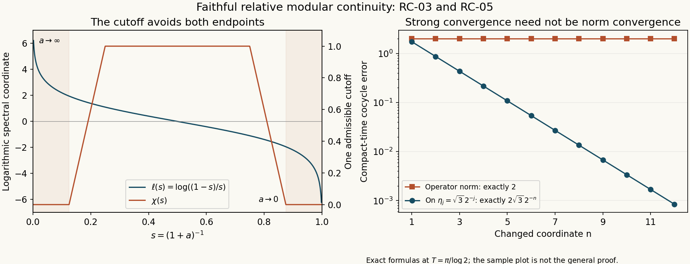

Norm continuity of relative modular time
A small change of a positive normal functional changes its cone vector in norm. The relative Tomita operators then converge on one common graph core. This lesson follows that change through resolvents, logarithms and imaginary powers to the cocycle and modular automorphism group. A spectral cutoff makes the passage uniform on bounded time intervals, even when the reference weight is infinite at the identity.
The source theorem is M. Takesaki, Theory of Operator Algebras II, IX.1.19. Both governing pages have been consulted. The arguments and solutions below are independently written by GPT-6.1 Sol (OpenAI), Ultra effort, October 2026, under CC0. The existing natural-cone, relative-GNS and spectral-calculus lessons retain their proof ownership.
The theorem, with its hypotheses retained
Let \((M,H,J,P)\) be a standard form. Suppose that \((\varphi_i)\) is a net of faithful positive normal functionals with faithful positive normal limit \(\varphi\), and that
\[ \|\varphi_i-\varphi\|\longrightarrow0. \tag{RC.1} \]Fix a faithful normal semifinite weight \(\psi\). All GNS maps below use the common standard coordinates from canonical L2. Put
\[ \begin{aligned} A_i&=\Delta_{\varphi_i,\psi},\\ A&=\Delta_{\varphi,\psi},\\ D&=\Delta_\psi. \end{aligned} \tag{RC.2} \]These are positive injective self-adjoint operators. For every finite \(T\ge0\), every \(\eta\in H\), every \(x\in M\), and every \(f\in M_*\), we prove:
- \(A_i\to A\), \(A_i^{1/2}\to A^{1/2}\), and \(\log A_i\to\log A\) in the strong resolvent sense.
- The cocycles \(c_i(t)=[D\varphi_i:D\psi]_t\) converge to \(c(t)=[D\varphi:D\psi]_t\) uniformly for \(|t|\le T\) in the \(\sigma\)-strong* topology.
- The modular groups satisfy
also with \(x^*\) in place of \(x\), and the stronger predual assertion
\[ \begin{gathered} \sup_{|t|\le T} \|f\circ\sigma_t^{\varphi_i}-f\circ\sigma_t^\varphi\|\\ \longrightarrow0. \end{gathered} \tag{RC.4} \]Their inverses satisfy the same assertions.
The source states these conclusions for a sequence on a \(\sigma\)-finite algebra. The existence of the faithful finite functional \(\varphi\) already supplies a faithful normal state after normalization; hence that hypothesis is retained automatically. No separability of \(H\) follows or is assumed. The index set here may be any directed set. No order relation between the \(\varphi_i\), no uniform spectral gap, and no finiteness of \(\psi(1)\) are required. The zero algebra is immediate; work below with \(M\ne0\).
One fixed graph core controls the square roots
Write \(\xi_\nu\in P\) for the vector of a positive normal functional \(\nu\). The cone-vector norm estimate gives
\[ \begin{gathered} \|\xi_{\varphi_i}-\xi_\varphi\|\\ \le \|\varphi_i-\varphi\|^{1/2}\longrightarrow0. \end{gathered} \tag{RC.5} \]Because \(\nu\) is bounded, its finite left ideal is all of \(M\). Moreover its standard GNS map is \(\eta_\nu(y)=y\xi_\nu\): the finite identity vector is the cone vector by the finite-projection argument in Every normal positive functional has a cone vector, with support \(1\), and left multiplication gives the formula.
Consequently the full mixed relative core in One Hilbert space for all n.s.f. GNS maps is the same for every numerator:
\[ \mathcal E=\eta_\psi(\mathfrak n_\psi). \tag{RC.6} \]It is not merely dense in \(H\). SF-08 and SF-13 prove that it is a graph core for the closure of the initial relative Tomita map and hence for its positive square-root factor. For \(y\in\mathfrak n_\psi\), that factor satisfies
\[ \begin{aligned} J A_i^{1/2}\eta_\psi(y)&=y^*\xi_{\varphi_i},\\ J A^{1/2}\eta_\psi(y)&=y^*\xi_\varphi. \end{aligned} \tag{RC.7} \]The graph norms agree because \(J\) is antiunitary. In particular every vector of \(\mathcal E\) belongs to every square-root domain, and
\[ \begin{gathered} \|(A_i^{1/2}-A^{1/2})\eta_\psi(y)\|\\ \le\|y\|\,\|\varphi_i-\varphi\|^{1/2}. \end{gathered} \tag{RC.8} \]The graph-core convergence theorem in Convergence and cutoffs now proves strong resolvent convergence of the square roots. It applies to arbitrary nets and requires a core only for the limiting operator.
That same theorem supplies bounded continuous functional calculus under strong resolvent convergence. For a nonreal \(z\), the function
\[ s\longmapsto(s^2-z)^{-1} \tag{RC.9} \]is bounded and continuous on \(\mathbb R\). Applied to the square roots, it proves \((A_i-z)^{-1}\to(A-z)^{-1}\) strongly. Thus \(A_i\to A\) in the strong resolvent sense as well. Applying \(s\mapsto(1+s^2)^{-1}\) gives
\[ \begin{gathered} B_i=(1+A_i)^{-1},\\ B=(1+A)^{-1},\\ B_i\longrightarrow B\quad\hbox{strongly}. \end{gathered} \tag{RC.10} \]All these bounded operators are positive contractions. The identification of the relative operators with spatial derivatives is the complete mixed-graph theorem Ordinary relative GNS maps are a specialization, transported through the common standard-form comparisons. No changing GNS Hilbert spaces are identified by notation alone.
Remove both spectral endpoints before taking time suprema
We apply the spectral cutoff mechanism of Logarithms and imaginary powers to (RC.10). In that lesson order supplies resolvent convergence and injectivity. Here the relative graph supplies convergence, and faithfulness supplies injectivity. The remaining argument uses just those two facts, as the following details show.
There is no spectral atom of \(B\) at zero: \((1+A)^{-1}\) has zero kernel. Its spectral projection at one is the kernel projection of \(A\), which is also zero. The same statements hold for every \(B_i\). On \(0<s<1\), put
\[ \ell(s)=\log\frac{1-s}{s}. \tag{RC.11} \]For any nonreal \(z\), the function
\[ \begin{gathered} h_z(s)=(\ell(s)-z)^{-1},\\ h_z(0)=h_z(1)=0 \end{gathered} \tag{RC.12} \]is continuous on \([0,1]\). The endpoint values follow from \(\ell(s)\to+\infty\) as \(s\downarrow0\) and \(\ell(s)\to-\infty\) as \(s\uparrow1\). The bounded continuous-calculus theorem in SK-09 and (RC.10) give \(h_z(B_i)\to h_z(B)\) strongly. By the exact Borel-calculus domains in Unbounded measurable functions and Changes of variable, powers, and actual ranges, these operators are the resolvents of \(\log A_i\) and \(\log A\). This proves the logarithm assertion. No value of the logarithm is assigned to a nonzero kernel.
For the time-uniform conclusion, fix \(\eta\in H\) and \(\varepsilon>0\). Since its spectral measure for \(B\) has no endpoint mass, choose \(0\le\chi\le1\) continuous, supported in a compact subinterval of \((0,1)\), with
\[ \|(1-\chi(B))\eta\|<\varepsilon. \tag{RC.13} \]Successively wider interior cutoffs tend to one on \((0,1)\); scalar dominated convergence proves this choice for the fixed limiting measure. Strong convergence of \(\chi(B_i)\) then gives, eventually,
\[ \|(1-\chi(B_i))\eta\|<2\varepsilon. \tag{RC.14} \]This is one cutoff followed by an eventual net bound, not dominated convergence applied to an arbitrary net of measures.
Set \(F_t(s)=\chi(s)e^{it\ell(s)}\) on the interior and zero at the endpoints. For \(L=\sup_{\operatorname{supp}\chi}|\ell|<\infty\),
\[ \|F_t-F_r\|_\infty\le L|t-r|. \tag{RC.15} \]For each fixed \(r\), continuous calculus gives \(F_r(B_i)\eta\to F_r(B)\eta\). Choose a finite mesh in \([-T,T]\). The mesh errors tend to zero at one common eventual index, while (RC.15) bounds the two interpolation errors by \(2L|t-r|\|\eta\|\). First refine the mesh and then take that eventual index. It follows that
\[ \begin{gathered} \sup_{|t|\le T} \|(F_t(B_i)-F_t(B))\eta\|\\ \longrightarrow0. \end{gathered} \tag{RC.16} \]Outside the cutoff, the imaginary powers have norm one. Equations (RC.13–14) therefore give an eventual error at most \(3\varepsilon\), besides the term in (RC.16). Letting \(\varepsilon\downarrow0\) proves
\[ \sup_{|t|\le T} \|(A_i^{it}-A^{it})\eta\|\longrightarrow0. \tag{RC.17} \]The same proof, or replacement of \(t\) by \(-t\), gives the adjoint assertion. Spectrum may accumulate at zero; faithfulness removes the atom, not the accumulation.
We shall use one finite-cover consequence. If \(\|E_i(t)\|\le2\) and \(\sup_{|t|\le T}\|E_i(t)\zeta\|\to0\) for each fixed \(\zeta\), then the convergence is uniform also over any norm-compact set \(L_0\) of vectors. A finite \(\delta\)-net \(\zeta_1,\ldots,\zeta_m\) gives
\[ \begin{gathered} \sup_{\zeta\in L_0,\,|t|\le T}\|E_i(t)\zeta\|\\ \le 2\delta+\\ \max_{1\le k\le m}\sup_{|t|\le T}\|E_i(t)\zeta_k\|. \end{gathered} \tag{RC.18} \]Directedness handles the finitely many eventual indices. Then let \(\delta\downarrow0\).
Cocycles, modular groups and the predual
The exact spatial formula in The balanced-matrix cocycle is independent of the reference, with the opposite of \(\psi\) as the fixed commutant reference, is
\[ \begin{aligned} c_i(t)&=A_i^{it}D^{-it},\\ c(t)&=A^{it}D^{-it}. \end{aligned} \tag{RC.19} \]These are unitaries in \(M\), not merely bounded operators in \(B(H)\). The family \(\{D^{-it}\eta:|t|\le T\}\) is norm compact by strong continuity and compactness of the time interval. Apply (RC.17–18) to that family. This proves compact-time strong convergence of the cocycles.
For their adjoints, unitarity gives
\[ \begin{gathered} \|(c_i(t)^*-c(t)^*)\eta\|\\ =\|(c(t)-c_i(t))c(t)^*\eta\|. \end{gathered} \tag{RC.20} \]The vectors \(c(t)^*\eta\) form a norm-compact set, so the same finite-cover argument proves compact-time strong* convergence. In standard form, each positive normal functional \(g\) has a cone vector \(\xi_g\), and its \(\sigma\)-strong seminorm is
\[ g(a^*a)^{1/2}=\|a\xi_g\|. \tag{RC.21} \]Thus the strong* assertions just proved imply precisely the claimed \(\sigma\)-strong* assertions, with uniformity for each fixed seminorm.
For modular groups put \(V_i(t)=A_i^{it}\), \(V(t)=A^{it}\). The two modular actions and the relative conjugation identifies \(\sigma_t^{\varphi_i}=\operatorname{Ad}V_i(t)\) and \(\sigma_t^\varphi=\operatorname{Ad}V(t)\). For fixed \(x\in M\),
\[ \begin{gathered} (V_i(t)xV_i(t)^*\\ -V(t)xV(t)^*)\eta\\ =V_i(t)x(V_i(t)^*-V(t)^*)\eta\\ +(V_i(t)-V(t))xV(t)^*\eta. \end{gathered} \tag{RC.22} \]The first term is controlled by \(\|x\|\) times the adjoint version of (RC.17). The vectors \(xV(t)^*\eta\) form a compact set, so (RC.18) controls the second. This proves (RC.3). Apply the same argument to \(x^*\) to obtain strong* convergence and hence \(\sigma\)-strong* convergence. Replacing \(t\) by \(-t\) proves the inverse statements.
Finally the complete predual construction Every tensor vector is a summable vector series through The concrete predual and its intrinsic norm writes each normal functional as
\[ \begin{gathered} f(x)=\sum_{k\ge1}\langle x\xi_k,\eta_k\rangle,\\ \sum_k\|\xi_k\|\|\eta_k\|<\infty. \end{gathered} \tag{RC.23} \]For a single pair, the unit-ball estimate used in Increasing weights and the automorphism topology is
\[ \begin{gathered} \|\omega_{\xi,\eta}\circ\operatorname{Ad}V_i(t)\\ -\omega_{\xi,\eta}\circ\operatorname{Ad}V(t)\|\\ \le \|(V_i(t)^*-V(t)^*)\xi\|\,\|\eta\|\\ +\|\xi\|\,\|(V_i(t)^*-V(t)^*)\eta\|. \end{gathered} \tag{RC.24} \]It follows by adding and subtracting the coefficient with vectors \(V(t)^*\xi\) and \(V_i(t)^*\eta\), and using the unit-ball bound on \(x\). A finite initial part of (RC.23) tends to zero uniformly in time by (RC.17). The tail is bounded uniformly by twice the sum of its vector-norm products, since automorphisms are isometries. Choose the tail first and then the eventual index for the finite part. This proves (RC.4), for general normal functionals and arbitrary nets, with the inverse assertion again obtained by \(-t\).
Four problems with complete solutions
For the exact compact-time errors, write the phase envelope as
\[ F(r)=\begin{cases} 2\sin(r/2),&0\le r\le\pi,\\ 2,&r\ge\pi. \end{cases} \]Thus \(F(r)=2\sin(\min\{r/2,\pi/2\})\) for \(r\ge0\). The two formulas agree at \(r=\pi\).
Problem 1: a scalar clock. On \(M=\mathbb C\), let \(\varphi_i(z)=a_i z\), \(\varphi(z)=az\), and \(\psi(z)=bz\) on positive scalars, where \(a_i\to a>0\) and \(b>0\). Find the exact compact-time cocycle error.
Solution. The relative operators are the positive scalars \(a_i/b\) and \(a/b\). After cancelling the common unit-modulus factor, the error at \(t\) is \(|e^{it\delta_i}-1|\), with \(\delta_i=\log(a_i/a)\). Hence
\[ \begin{gathered} \sup_{|t|\le T}|c_i(t)-c(t)|\\ =F(T|\delta_i|)\\ \le T|\delta_i|. \end{gathered} \tag{RC.25} \]The equality follows from \(|e^{ir}-1|=2|\sin(r/2)|\): the maximum increases up to phase \(\pi\), after which that phase is already in the interval. Continuity of the scalar logarithm proves convergence. All modular automorphisms of \(\mathbb C\) are the identity.
Problem 2: a noncommuting numerator and a different reference. In the Hilbert–Schmidt standard form of \(M_2(\mathbb C)\), set
\[ \begin{aligned} d&=\operatorname{diag}(2,5),\\ k&=\operatorname{diag}(3,7),\\ u_s&=\begin{pmatrix}\cos s&-\sin s\\ \sin s&\cos s\end{pmatrix},\\ d_s&=u_sdu_s^*. \end{aligned} \tag{RC.26} \]Use \(\varphi_s(x)=\operatorname{Tr}(d_sx)\), \(\varphi(x)=\operatorname{Tr}(dx)\), and \(\psi(x)=\operatorname{Tr}(kx)\).
Solution. The cone vectors are \(d_s^{1/2}\) and \(d^{1/2}\). Their relative operators act by \(A_s z=d_szk^{-1}\), \(Az=dzk^{-1}\); these are positive on the Hilbert–Schmidt space because the commuting left and right positive actions have positive product. The cocycles and groups are
\[ \begin{aligned} c_s(t)&=d_s^{it}k^{-it},\\ c(t)&=d^{it}k^{-it},\\ \sigma_t^{\varphi_s}(x)&=d_s^{it}xd_s^{-it}. \end{aligned} \tag{RC.27} \]The self-adjoint trace-zero matrix \(d_s-d\) has eigenvalues \(\pm3|\sin s|\), so \(\|\varphi_s-\varphi\|=6|\sin s|\). The two-phase matrix calculation in An explicit cocycle and its compact-time error, with phase ratio \(e^{it\log(5/2)}\), gives
\[ \begin{gathered} \sup_{|t|\le T}\|c_s(t)-c(t)\|\\ =|\sin s|\,F(T\log(5/2)). \end{gathered} \tag{RC.28} \]Multiplication by \(k^{-it}\) preserves the norm; this is why the different reference does not change that error. Conjugation gives a modular-group error at most \(2\|x\|\) times (RC.28). In this finite matrix example convergence is in operator norm.
Problem 3: loss of faithfulness. With trace reference on \(M_2(\mathbb C)\), take numerator densities \(d_n=\operatorname{diag}(1,1/n)\) and limit \(d_0=\operatorname{diag}(1,0)\).
Solution. The functional norm difference is \(1/n\). The spatial operators \(A_n=L_{d_n}\) converge to \(A_0=L_{d_0}\) in operator norm and hence in the strong resolvent sense. But \(A_0\) has a kernel. If its imaginary powers are extended by zero on that kernel, their zero-time value is left multiplication by \(d_0\), while \(A_n^{i0}=1\). On the unit Hilbert–Schmidt vector \(E_{22}\) the difference has norm one. Thus the full-space unitary conclusion fails even at time zero. At the fixed time \(t=\pi/\log2\), the subsequences \(n=2^{2m}\) and \(n=2^{2m+1}\) give \(A_n^{it}E_{22}=E_{22}\) and \(-E_{22}\), respectively. There is no strong limit there either. The faithful-limit hypothesis cannot be removed by a resolvent argument.
Problem 4: strong continuity is weaker than operator-norm continuity. Let \(M=\ell^\infty(\mathbb N)\), let \(\psi\) be counting weight, and put
\[ \begin{aligned} \varphi(x)&=\sum_{j\ge1}2^{-j}x_j,\\ \varphi_n(x)&=\varphi(x)+2^{-n}x_n\\ &(x\ge0). \end{aligned} \tag{RC.29} \]Find the cocycle difference in the standard representation on \(\ell^2(\mathbb N)\).
Solution. These are faithful normal finite functionals, \(\|\varphi_n-\varphi\|=2^{-n}\), and the reference is n.s.f. with \(\psi(1)=\infty\). The relative operators multiply by \(2^{-j}\), with the \(n\)-th value doubled for \(A_n\). Their spectra accumulate at zero but have no kernel. The cocycle ratio \(c_n(t)c(t)^*\) multiplies the \(n\)-th coordinate by \(2^{it}\) and all other coordinates by one. Therefore
\[ \begin{gathered} \sup_{|t|\le T}\|(c_n(t)-c(t))\eta\|\\ \le 2|\eta_n|\longrightarrow0,\\ \sup_{|t|\le T}\|c_n(t)-c(t)\|\\ =F(T\log2). \end{gathered} \tag{RC.30} \]The second value is independent of \(n\) and positive when \(T>0\). Hence operator-norm convergence is not a general conclusion of this theorem. The functionals are not an increasing sequence, and the proof did not use monotonicity. Both modular groups are trivial because the algebra is abelian.

Figure RC.1. The left panel plots the logarithmic coordinate in (RC.11) and one admissible piecewise linear cutoff, zero outside [1/8,7/8] and one on [1/4,3/4]. The proof in RC-03 chooses its cutoff for the particular vector and error; this illustration does not select it for every vector. In Problem 4, take the unit vector with coordinates eta_j = sqrt(3) times 2^(-j), and T = pi/log(2). The right panel then plots the exact compact-time errors: 2 in operator norm and 2 sqrt(3) times 2^(-n) on that vector. The full proofs remain in RC-03–05. The original plotting source accompanies the figure.
For an accessible account of the spectral step, see F. Hiai, Concise lectures on selected topics of von Neumann algebras, arXiv:2004.02383v1 (2020), Appendix A, Lemma A.4, pages 144–146. Its sequence argument provides further reading; the net and compact-time proof above retains the internal SK and QF providers. Read the lecture notes.